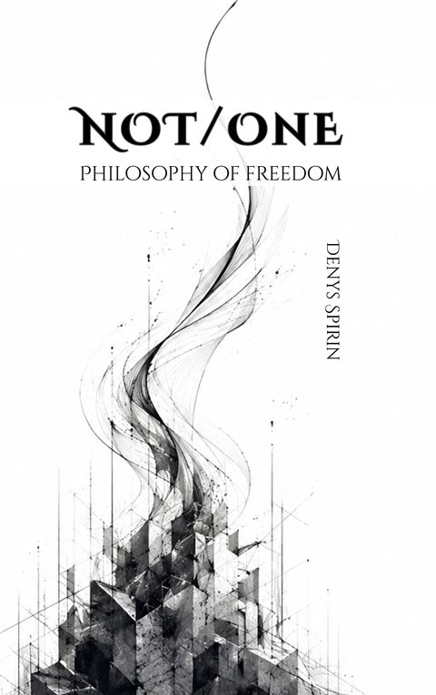

Volume IX
Not/One: Philosophy of Freedom
The book takes the academic dispute over free will into ontology. Freedom is located in the act that closes a deliberation — a step following neither from the reasons weighed nor from the prior state. Law, nature, and matter are then read as such acts hardened past revocation. Not/One names the interval before the first cut, from which another cut can arise.
Contents
- The SettlingA man watched money, caught between hunger, prohibition, fear, and calculation. Reflection allows every conclusion to be reopened, yet reflection alone can never complete an action. The decisive operation is the settling: the act that ends deliberation and establishes one answer as sufficient. Freedom, wherever it occurs, belongs to this closing rather than to the motives, rules, or reasoning that preceded it.
- The Third ReadingDeterminism locates the settling in character, upbringing, inherited standards, or the architecture that assigns weight to reasons. Indeterminism leaves the closing without a sufficient antecedent and appears to reduce it to chance. Both accounts remain on the axis of derivation. A third reading asks who settled the question. The answer is authored in the act, and the author of that answer arises together with it.
- The JointA prior state and a later state are connected by a law, yet the law states which transition holds without showing how the later state is produced. Turning the law into a further premise generates a regress within reasoning, while treating it as a physical power places production among the primitives. Frank’s potential ground compresses the same difficulty into the language of development. Determinism relocates the underived joint into the law.
- The PrimitiveNature consults no formula before an event occurs. Laws may describe regularities, or real powers may produce their manifestations. The first route removes production from the account; the second accepts production as basic. Mechanisms divide a transition into smaller measurable transitions and eventually reach a fundamental force, disposition, transfer, or productive relation. Causal explanation and authorship both terminate in primitives, leaving determinism without a privileged foundation.
- The Reproducible FormCausal necessity never appears among the things observed. Laws, mechanisms, interventions, statistical distributions, capacities, and physical processes establish causation through forms that remain stable across cases. Singular events can be fully causal, including unique collisions and individual acts of cutting, yet their causal status becomes intelligible through a repeatable type or established theoretical structure. Reproducibility explains recognition and prediction while production remains unseen.
- The Promissory NoteA hundred nearly identical Johns divide between theft and refusal, and retrospective explanations accommodate every outcome. Hidden differences may genuinely determine the choices, though such differences become explanations only when independently identified and tested. The stronger deterministic claim places its faith in a complete state computable in principle and inaccessible in practice. It becomes a promissory note drawn on a calculation nobody possesses, while freedom declines to promise an explanation that would dissolve the act into derivation.
- ChanceChance names ignorance of determining conditions, the accidental intersection of causal lines, and a genuinely uncaused event. Properties drawn from coins and random distributions pass too easily into the third meaning. Lack of a cause establishes neither absence of control nor absence of authorship. Causation also need not necessitate a unique outcome. The familiar fork between determination and randomness gains its force by collapsing several distinct relations into a single word.
- AuthorshipIntention, bodily origin, correspondence with motives, the feeling of agency, and later endorsement all fail to distinguish an act from an event that merely occurred within a person. Before the settling there is a bearer: an organism, history, personality, and field of available grounds. The author of the particular answer arises in the answering. Authorship names the primitive constitutive relation through which a settling becomes someone’s deed.
- The NameEach free settling constitutes the author of that particular answer, yet nothing in the act carries the same author into later acts. Body, memory, habit, and biography preserve the bearer; they do not unite the authors of separate settlings. The Name is a further free act that takes those authors as one singular without deriving their identity from a shared nature or determining what they will do next. A person may act freely without ever performing the Name, leaving authorship local to each deed.
- The Constituted AuthorAgent-causal theories place a finished substance behind the act and leave unexplained why its power issued in this direction. Event-causal libertarianism relocates the same difficulty into an indeterminate resolution, while compatibilism secures attribution through an already formed character. Fichte’s Tathandlung supplies another structure: agent, act, and instituted self-relation arise together. The bearer provides the material; the settling gives it the form of the author of this answer.
- Physical RealizationA free settling occurs in the brain and body without entering from an immaterial sphere. Physical realization therefore survives, while strong causal closure—the claim that every physical outcome was sufficiently fixed by an antecedent physical cause—does not. The act adds no second force beside neural events. An open physical transition receives its form in the settling, and quantum indeterminacy supplies only a precedent for openness. Authorship remains irreducible to indeterminacy, non-computability, or downward constraint.
- No MarkNeural preparation, unpredictability, effort, complexity, practical knowledge, and the experience of choosing accompany determined and free actions alike. Libet and later decoding experiments identify processes preceding reported awareness without establishing sufficient determination of the eventual choice. Neither external measurement nor introspection reveals the modal status of the settling. Freedom may be immediately enacted, practically presupposed, or finally unestablishable. Its postulate functions like an axiom governing how acts are taken.
- The WagerFreedom is postulated as a positive relation: an open question is resolved, a ground is established as sufficient, and an author arises in giving the answer. Kant places freedom outside theoretical proof; this account keeps the act inside the physical world and accepts its empirical indistinguishability. Scientific theory choice reveals the same structure of reasons that bear without compelling. Determinism and freedom become rival wagers, supported respectively by prediction and imputation.
- LehavahEvery settling leaves a postulate, and every postulate can cool into a rule that answers later questions in advance. Habituation creates dependable character by transforming past acts into present nature. Lehavah names the flame that keeps an instituted cut revocable: the will acknowledges what it laid down while withholding the authority of necessity. Practice cultivates reflection, contrary possibilities, and the reopening of settled grounds. None of these skills can manufacture the next free act.
- The GapEpistemic uncertainty, physical indeterminacy, and agential openness are three separate structures. Freedom belongs to the third: prior grounds fail to establish their own sufficiency, and the settling resolves the question as someone’s answer. The ontological gap never waits in advance as an empty hole. It exists in the underived resolution itself. The act closes the gap it constitutes and leaves behind a decision, rule, identity, or postulate capable of directing later events.
- Birth and RepetitionCausality is the primitive of repetition, while freedom is the primitive of birth. Repetition carries forward a form already in force; birth institutes a form whose unity had no prior instance. Self-positing draws author and world together, with the posited side persisting as matter and the authoring side maintaining itself as the Name. An instituted form continued without reopening becomes sediment, law, nature, and eventually the world’s deepest material regularity.
- Act-TimeThe settling does not occupy a ready-made temporal container. It institutes the asymmetry from which past, present, and future arise: the inherited becomes unalterable, the resolution becomes present, and what remains unsettled opens ahead. Sediment carries this asymmetry forward as world-time. Whitehead, Deleuze, Simondon, and Schelling approach the same structure from different directions. A human act institutes a local temporal boundary that enters the established physical order as another stubborn fact.
- The Word for FreedomThe earliest recorded word for freedom, Sumerian ama-gi₄, names the cancellation of debt bondage and the return of a person to family and land. Later traditions increasingly turn release, belonging, self-origin, and self-rule into abstract conditions that someone possesses. Svabhāva can be reopened through its verbal root as own-becoming, provided the “own” arises after the act. The history of the vocabulary repeats the movement from living deed into settled nature.
- The UnsayableReplacing the noun with a verb fails to secure freedom, since every process acquires a characteristic form and repeats its own manner of running. Apophasis clears false names and risks installing a sacred substance inside the cleared space. Pointing directs attention toward the settling without pretending to define it; silence preserves precision after the gesture. Philosophies of the Whole close the seam by dissolving agent and act into unity, leaving personality as a region of the cosmos rather than a source.
- The GraspEvery word divides a field into what it names and what it excludes. The differentiating operation can never appear among the differentiated objects it produces, since naming it leaves only another trace. Freedom and grasping meet at the birth of a cut: a distinction begins to operate where no such distinction previously held. Language inhabits the duration between the birth and death of grasps. Speech arrives structurally late, after the cut has already instituted its world.
- The TraceNāgārjuna dissolves every logical position through the tetralemma, while Derrida dissolves presence into difference and deferral. Both remain within operations already available to thought. The free cut institutes three related results: sides within a field, a present dividing already from not-yet, and a trace that allows the distinction to be held again. Thermostats and social systems execute inherited cuts. Freedom concerns the institution of the line that makes a difference relevant.
- Not/OneTiamat names what a cut is born from before it acquires sides. Marduk’s stroke turns her into sky and earth, repeating in every grasp that divides a field into this and its outside. The slash in Not/One holds open an interval prior to unity, plurality, assertion, and negation. Frank takes the One; Nāgārjuna exhausts the positions available to the Not. The threshold precedes both, and language reaches it only through the tear where its own sentence fails.
- TiamatA purely negative description would turn the interval into a hidden ocean, primal substance, being, or apophatic god. Tiamat receives a positive account as the instituting break: inherited determinacy ceases, and difference begins without a form waiting in reserve. Castoriadis’s magma and Cusanus’s possest approach this boundary while leaving institution anonymous or absorbing possibility into divine fullness. Tiamat is openness within the event; freedom is the authored resolution; Marduk is the cut once settled.
- The EncounterAnother freedom appears through an act that breaks the image held of the other. The encounter yields no predicate, mark, or inference, since each would return the singular act to a type. It is pre-logical and enactive, known like the taste of salt. Unity dissolves the separation required for two wills to meet, while a model of two finished entities misses the clearings through which they appear. Relations accumulate sediment, and freedom requires that shared history remain held rather than obeyed.
- The Dying GodThe extension from human settling to physical regularity requires a cosmological wager: the forms of nature are cuts instituted once and retained as execution. On this reading, nature is freedom hardened into its own corpse. The demiurge is the author of world-order frozen into law, continuously dying wherever a living cut becomes an unquestioned nature. The world persists as ongoing precipitation, while free acts remain breaches in its completion. Valuing those breaches is itself a chosen wager for the open.
- Matter and the MeonMatter is the maximum hardening of a cut rather than a second substance opposed to spirit. Sediment supplies the soil through which acts appear, and its opacity begins when the trace presents itself as an eternal source. Tiamat is chaos at the birth of determination; the meon is chaos after determination has exhausted itself into indistinguishability. Entropy gives this descent a physical image. Life’s emergence from dead matter is replaced by the hardening of the living into the dead.
- Gnostical TurpitudeNabokov’s Cincinnatus is condemned because he remains opaque in a society organized around mutual legibility. Universal causality becomes a demand that every act be readable from the predicates of its author. Transparent sediment exposes its own instituted seams; a legible living being is exhausted by the profile used to predict him. Institutions reward readability because prediction requires stable types. Cincinnatus’s final refusal reveals the completed deterministic world as scenery maintained by consent to the reading.
- The ReturnAma-gi₄ names freedom as cancellation and return to the mother. Withdrawal moves from execution back toward the settling still concealed within it, allowing a hardened obligation to lose its authority. The mother is no original home or sustaining ground. She is the interval opened when sediment becomes transparent and the cut can be drawn again. Withdrawal remains an event rather than a permanent program, since scheduled cancellation would harden into another rule.
- The Five CirclesPractice works on five forms of acquired determination: belief, body, prohibition, purpose, and author. Pyrrhonian suspension, Socratic examination, bodily inhibition, voluntary discomfort, transgression, non-teleological practice, self-inquiry, Chöd, and koan work expose grounds that had been deciding in advance. Every circle has a counterfeit: compulsive doubt, compulsory asceticism, reverse obedience, purposelessness as attainment, and a grander identity built from the destruction of the smaller one. Technique can suspend authority; it cannot produce the settling.
- The RuinFreedom and damage share the visible cessation of automatic execution. Their difference appears when a new question must be settled. Depersonalization can destroy ownership of thought; dissociation can silence the body; compulsive transgression can erase the boundary it needed; depression can remove the capacity to posit a purpose; radical ego-dissolution can leave no author able to arise. The Name holds instituted difference across acts and keeps it from dissolving into Tiamat. An interval preserves the capacity to answer. A ruin destroys it.
- Afterword: Reed, Wind, and ReturnGi is the reed from which the stylus is cut, the instrument that presses difference into clay. The hollow reed also carries wind and lets breath become voice. Tiamat mothers the birth of the cut; Lilith keeps the hollow open so the Name can speak again. Gi₄ returns what hardened to the living interval of its birth. Reed, wind, and return gather the book’s movement: the cut arises, remains breathable, and can be withdrawn before its inscription becomes a nature.